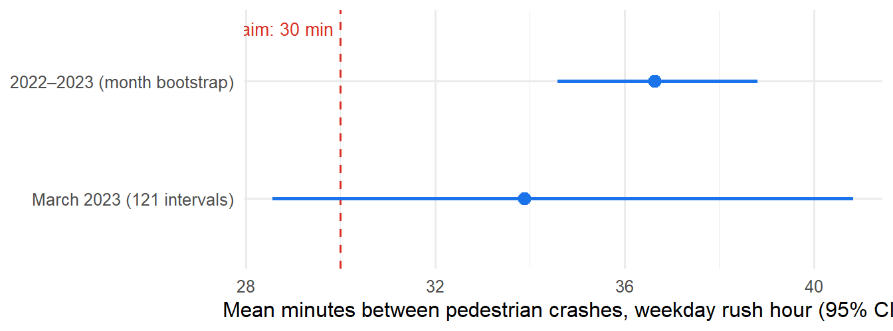
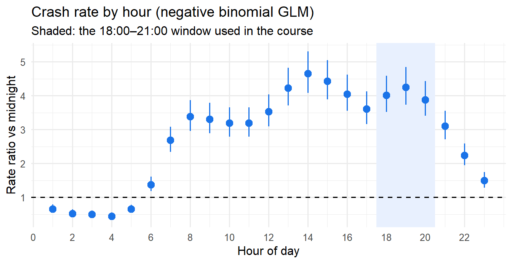
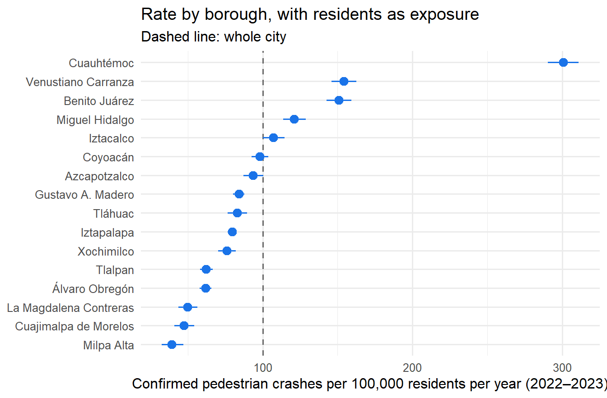

Is someone hit by a car every 30 minutes in Mexico City?
Testing a popular claim with 2 years of emergency-call records, and the three traps that almost gave the wrong answer
November 2026 · Teaching case and portfolio project · Code and data in the repository
Author’s note. This analysis is the backbone of the Statistical Inference course I teach at the Facultad de Ciencias, UNAM (syllabus 1541). Each chapter answers one part of the question with the tools of one unit of the syllabus: sampling distributions, exploratory analysis, point estimation, confidence intervals and hypothesis testing. A final chapter goes beyond the course with frequency GLMs. The chapters are in Spanish (links below); this page summarises them.
Data
52,715
pedestrian-crash reports to Mexico City’s C5 emergency centre, Jan 2022 – Feb 2024
Question
30 min?
“at rush hour, someone is hit by a car every half hour”
Answer (2022–2023)
37 min
95% CI 34.6–38.8 · the claim overstates the frequency by about 22%
Out-of-sample check
29 / 32
borough-months of 2024 inside the 90% prediction intervals
The question and the answer
A common saying in Mexico City is that “at rush hour, someone is hit by a car every half hour.” I turned it into a testable statement: on weekdays between 18:00 and 21:00, the mean time between confirmed pedestrian crashes is \(\mu = 30\) minutes.
- With one month of data (March 2023) the claim cannot be rejected: \(\hat\mu\) = 33.9 minutes, exact \(\chi^2\) test p = 0.16. But that test had only a 42% chance of detecting a true mean of 35 minutes, so not rejecting says little.
- With two years the answer is clear: someone was hit every 36.6 minutes on average (95% CI 34.6–38.8, z = 6.1). That is 1.64 confirmed crashes per hour instead of 2.
The statistics are standard. What makes the difference is three data problems that, left alone, would have produced a confident wrong answer.
Three traps
1. The observation window biases the answer, and every diagnostic missed it
We only watch the city from 18:00 to 21:00. The natural approach measures intervals inside each evening, but it throws away the time before the first crash and after the last one, and long intervals are the ones most likely to be cut. In a simulated Poisson process with a known mean of 35 minutes, that method estimates 26.9 minutes, and the biased intervals still look exponential: the histogram, the Q-Q plot and the goodness-of-fit test all pass. On the real data it gives 27.1 minutes, which would have reversed the conclusion: crashes would look more frequent than the claim, not less.
Fix: a “rush-hour clock” that stitches consecutive evenings together. It is justified by the memoryless property of the exponential, and it is checked against the exposure-based estimator (time observed ÷ number of crashes), which agrees.
2. The same crash, confirmed twice
There were too many intervals under one minute for an exponential. Among reports less than 10 minutes apart, 10.4% were within 500 m of each other, against 0.24% for two random reports. These are the same crash registered under two call numbers. Removing them (2,627 → 2,555 events) fixed the goodness of fit: a Kolmogorov–Smirnov test with the mean estimated (calibrated by parametric bootstrap, as in Lilliefors’ test) goes from p < 0.001 to p ≈ 0.65.
3. Months are not exchangeable, and a standard test did not notice
The usual dispersion test on daily counts did not reject the Poisson model (p ≈ 0.10). A \(\chi^2\) test of equal rates across the 24 months, with each month weighted by its observed days, did: p = 0.00025. The monthly mean ranges from 27 to 49 minutes. Treating two years as one homogeneous sample would understate the uncertainty. The two-year interval above therefore comes from a bootstrap over months, and the frequency model (below) shows the difference is seasonal: once month of the year is in the model, the remaining variation is consistent with chance (p = 0.57).
Beyond the course: a frequency model
Instead of restricting the analysis to a window where the rate is constant, the last chapter models the rate. It uses the tool insurers use for claim frequency: a Poisson/negative binomial GLM with an exposure offset, fitted on all hours of 2022–2023 (18,442 confirmed crashes).

- Peak risk is early afternoon, not the evening rush. The course window was chosen because its rate is stable, not because it is the most dangerous.
- The denominator decides the conclusion. Per 100,000 residents, Cuauhtémoc has 301 crashes a year, 3.8 times Iztapalapa and three times the city’s 100. But hundreds of thousands of people walk there without living there. A residential denominator measures the wrong exposure, which is the same question as “insured cars or kilometres driven?” in motor insurance.
- Out-of-sample validation found what the fit did not. Predicting January–February 2024 by borough (data the model never saw), 29 of 32 observations fall inside the 90% prediction intervals. The total, however, is underpredicted by 7%, because January–February 2022 were unusually low (the period coincides with the Omicron wave). Validating at only one level would have missed it.

The chapters (in Spanish)
| Chapter | Syllabus unit | What it adds to the answer | |
|---|---|---|---|
| 0 | La pregunta | — | The claim, the data, the variable |
| 1 | Distribuciones muestrales | 1 | Exact distribution of the mean, a \(\chi^2\) pivot, why normal-theory results fail here |
| 2 | Análisis exploratorio | 2 | The three traps; checking independence and identical distribution |
| 3 | Estimación puntual | 3 | Moments, MLE, Bayesian (credibility), Cramér–Rao, sufficiency, the exposure estimator |
| 4 | Intervalos de confianza | 4 | Pivotal, likelihood, Wald and Garwood intervals; simulated coverage; day and month bootstrap |
| 5 | Pruebas de hipótesis | 5 | Neyman–Pearson, power and sample size, likelihood-ratio test, paired vs independent samples, the answer |
| 6 | Modelos de frecuencia | beyond | Poisson/negative binomial GLM with exposure, seasonality, out-of-sample validation |
Data and reproducibility
- Crash reports: Incidentes viales reportados por C5, Gobierno de la Ciudad de México (datos.cdmx.gob.mx, CC BY 4.0). Only reports closed as confirmed (code A) are used; duplicates and false reports are excluded.
- Population: Censo de Población y Vivienda 2020, INEGI.
- Everything is reproducible in R:
Rscript run_all.Rdownloads the raw file (~100 MB) and renders every chapter.
Skills shown: Poisson processes · exact and asymptotic inference · bootstrap (block/cluster) · power analysis · likelihood-ratio tests · Bayesian conjugate updating · Poisson and negative binomial GLMs with exposure · out-of-sample validation · data-quality diagnostics · R · Quarto
Code: MIT License · Data: CC BY 4.0 (C5, Gobierno de la CDMX). Aaron Mauricio Gómez Jiménez · LinkedIn · ORCID